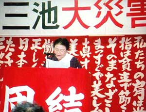

塚本ミスエさんからの報告
（2003年11月16日 三池ＣＯ現地共闘会議主催 「第４０回三池大災害抗議集会」 決意表明より）

三池ＣＯ被災者家族の塚本ミスエさん。福岡県大牟田市在住。
昭和３８年１１月９日は、私たちＣＯ患者・家族にとって生涯忘れることはできません。
４０年前の三川坑炭じん大爆発は、炭鉱の保安対策としては、まったく初歩的な「炭じん処理」の保安サボから起きた大災害です。
三池闘争前は、ベルトコンベアの当番が１台に１名いて、炭じんの掃除や油差しをしていたのが、三池闘争後は、１２台に１名と減ら
されたのです。当然に保安がおろそかになって起こるべきして起きた大災害です。元気で働きに行った夫や息子を４５８名も殺し、
８３９名のＣＯ患者を作り出して、その家族を不幸のどん底に突き落としたのです。
あれから４０年、幸せであるべき家庭にとって、一日として心の休まることのない日々でした。事故当時は夫は３６歳でした。１３
歳を頭に３人の子供がいました。末の子供は３歳でした。家庭の中で一番重要なときでした。
夫が救出されたのは昭和３８年１１月１０日朝の３時頃です。夫をやっと確認できたのは、６時過ぎでした。その時は仮死状態で、
全身スミで真っ黒でベッドに横たわっていました。夫の顔を見たときは、命はあったと思いホッとしましたが、意識はありませんでし
た。病院の先生に「大丈夫ですか」と聞くと、「大丈夫です。３日もあればよくなります」と言われました。しかし、３日経っても意
識は戻りませんでした。それから病院はあわてて、注射や点滴を始めたのです。
地域分会の人たちが三交代で付き添いに来てくれました。本当に仲間でなければできないことと思いました。自分一人では出来ない
こともよくわかりました。そのことが１週間、２週間と続きました。身体の血液も全部入れ替えました。意識は戻ったものの、記憶は
戻りませんでした。御飯を食べることも忘れていて、家族の顔も、自分の名前も覚えていませんでした。口に牛乳を入れてやっても飲
むこともできず、横からダラダラとこぼしています。
一番心を痛めたのは、父親との会話が出来ない子供たちのことです。病院から一ヶ月に１回帰ってくる夫は、返事すら満足にできま
せん。４０年もの間、回復の兆しさえみえないＣＯ患者になった夫を抱え、３人の子供たちを育ててきました。言葉では言いつくせな
い思いがします。
昭和４３年６月に夫の母が亡くなりました。病院のベッドに横たわる母を前にして、夫は無表情に突っ立っていました。「別れに、
バアちゃんと声をかけてやらんね」と言って、やっと出た言葉が「バアちゃん」の一言でした。
労災病院から外泊で帰った時のことです。病院に帰る朝、８時にマイクロバスが迎えに来るので８時前に万田公園前まで送って行き
ました。私は仕事に行かねばならなかったので、すぐバスが来るのでみんなと一緒にここで待つように言って私は家に帰りました。と
ころが、そばを離れた隙にマイクロバスは行ってしまいました。バスの後を追って、朝８時から夕方４時頃まで１０キロ位を歩いて労
災病院にたどりついたこともありました。病院に着いたときはぐったりして、息もたえだえでした。
労災病院で朝から少し元気がないので、具合でも悪いのかと聞かれても、頭を振るだけです。診察をしてもらって、盲腸だと判るし
まつです。すぐに手術をしましたが、翌日は手術をしたのを忘れて朝６時頃病院を飛び出しました。痛みも感じないようになっていま
す。
社宅の風呂に行くと、自分の着物を着て、その上から人の物を着て出てきますので、１３歳の長男がついて行っていました。長男が
いない時はお風呂の番台さんに頼んで私は外にいて、出てくるのを待って、人の物を着ていないか、身体検査をしなければなりません
でした。
夫は治る見込みがあるのか、当てのない毎日でした。こんなことが許されてはならない、三井に対して二度と事故を繰り返させては
ならないということが、私を駆り立て強くしていきました。三川鉱前、鉱長室、本社前、三川人事、坑底といろんな所で座り込み、ニ
ュースカーによって全国各地にキャラバン行動に出かけ、見も知らぬ街角でビラを配り、遺族や家族の苦しみを訴えました。
４５８名も殺して、８３９名ものＣＯ患者を出しながら、三井鉱山は誰一人責任を取る者もなく、当時の会社幹部は栄転して行きま
した。私たち労働者は虫けらではありません。
４０年間、食べ物にしても、量も味もわからず、ある時は電気がまの４人分の御飯を一人で食べてしまったり、酒も側にあれば一升
でも水でも飲むようにして飲んでいました。外泊の時、便所の中で取り替えたばかりのトイレ消臭剤をみんな食べて、危篤状態になっ
たこともありました。２４時間片時も目を離すことはできません。
ここにおられる二人は、宮嶋重信さんの弟さんと斉藤巌さんの奥さんです。宮嶋重信さんは、２３歳で爆発に遭い、熊本大学病院に
入院し、意識が戻らないまま昭和４９年に亡くなられました。母親のイシさんは、「あんな姿で１１年間も生き続けたのは、会社に抗
議しよったつだろう。私は息子の意思を受け継いで身体の続く限り、会社に責任を取らせるまで闘い続けます」と言われていました。
斉藤巌さんも昭和４９年に大牟田労災病院で５３歳で亡くなられました。
１９９３年３月に、ＣＯ裁判で「爆発の責任は三井鉱山にある」と勝利判決を勝ち取ることができました。さらには、その後に提訴
した外泊送迎訴訟でもほぼ勝利をすることができました。
私たちは、ＣＯ裁判で勝利しましたので、三井鉱山に対して、具体的に責任を取らせるために、５項目を要求して闘ってきました。
ところが、被災者の会の中で、５項目の中で要求していた裁判費用５６００万円をとるために、「ＣＯ問題について、三井鉱山とは
今後一切関係ありませんと文書を取り交わしてでもとる」「治療の補償要求については取り下げる」となりました。これから一番不安
の一つでもある治療の補償要求について、取り下げて、三井鉱山と文書を取り交わして５６００万円をとるということは、夫を金で売
ることになるので反対をしました。反対をする私が被災者の会にいては話が前に進まないので出て行ってもらいたいと再三厳しく言わ
れましたので、これまで一緒に闘ってきた被災者の会からやむにやまれず抜けざるを得ませんでした。
被災者の会を抜けることにはなりましたが、これまでどおり、三井鉱山へ５項目の要求を闘っていく私たちの闘いを現地共闘会議か
ら支持してもらい、この抗議集会が開催されましたことは、これからの闘いに大きな励みとなり、喜びでいっぱいです。
爆発から４０年、私にとって一番の慰めは、子供たちが強く、まっすぐに前向きに生きていることと、これまで苦しさにくじけよう
としたとき、多くの仲間たちの暖かい手助けと励ましがあって私を今日まで支えてくれたことです。この仲間たちと手を取り合って、
これからも精一杯闘い抜きますので、これまで通り支えていただきますようにお願いし、決意とします。
(資料提供・織田喬企さん)
BACK
|